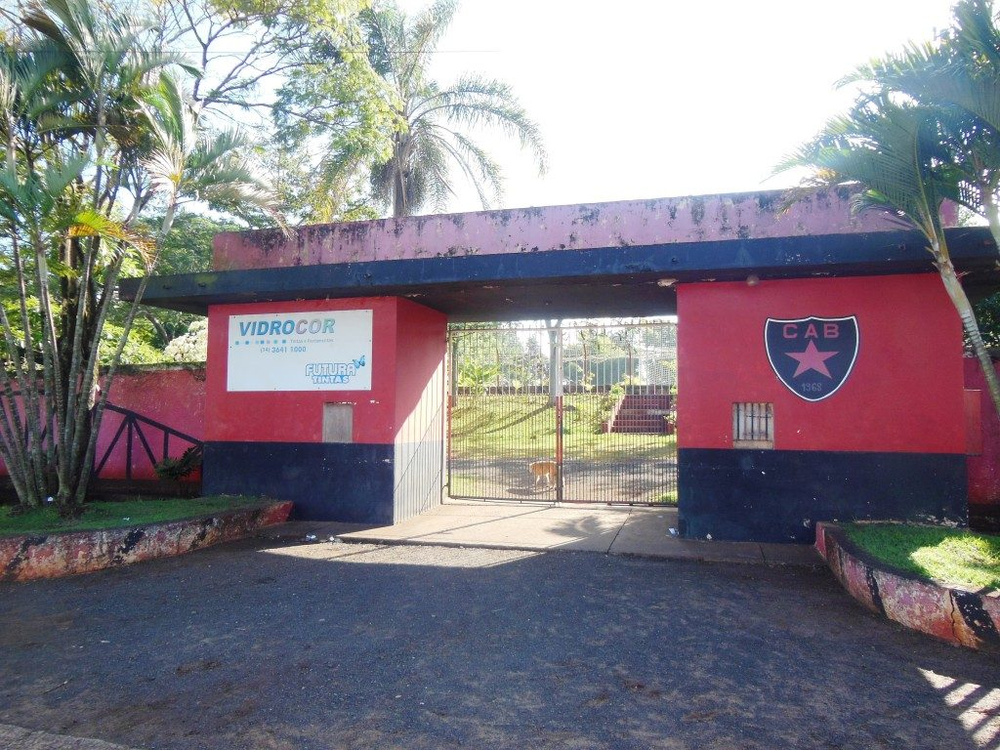
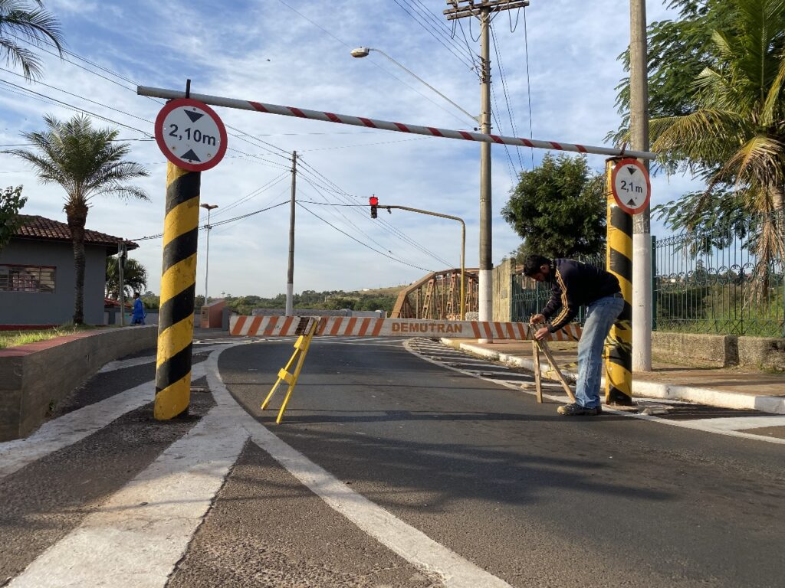

Um menino estava querendo começar a jogar bola e está indeciso

Ele sempre jogava futbol na rua e viu um club pequeno na cidade e tinha que pagar 50 reis e ele não tinha dinheiro.

Ele não desiste e vai vender bala na rua e conta seu sonho para os carros na rua até que ele contou a historia dele para um jogador e ele ofereceu uma oportunidade

Chegando lá ele participa da peneira e ele se destaca por sua raça e vontade e o treinador chama ele para uma reunião

Ao longo do tempo ele tava sendo destaque na cidade e começou as propostas para fora.

Ele ja começou a ganhar dinheiro com a carreira.

Explorou paises de fora e com muito esforço realiza seu sonho